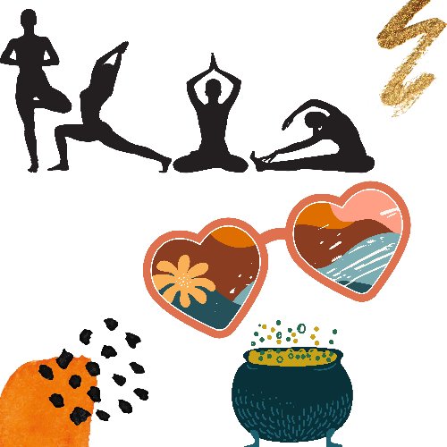

I am an Android & Web developer and also Technical translator. I work as a freelancer and have my own game in Google Store. I am a curious person, who likes developing, creating and languages in general.
I love the process of developing, which includes also design and creativity. I like every part of building a product from scratch, measurements, computing, plans...My tools for realisation of ideas are programming languages, frameworks, design tools, and languages. And this is why I love to be on my just a little chaotic desk and work.
Since years I was working as a freelance translator. So I have finished severel projects and these gave me so much experiences, not only about translation but also building my own discipline. I always had curiosity for programming, my first programming project was a game where you get applause and score points when you shoot a basket into the basketball hoop. After time I started to learn programming from scratch and started to gain experiences. One of my games is in Google Store. I wish to publish others soon.
I like yoga and training. These are part of my daily routine. We can say I like movement, inclusive travel. And sometimes experimental cooking. Nobody in danger, I promise. Oh, and I hope you like my collages here.
you have interests, curiosities and enthusiasm similar to mine!